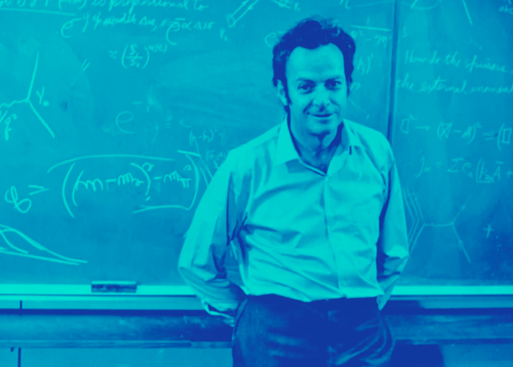
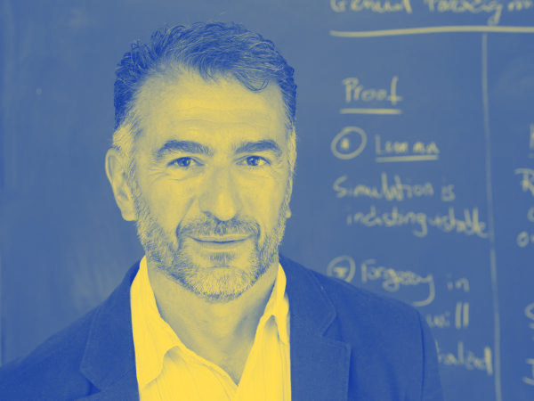
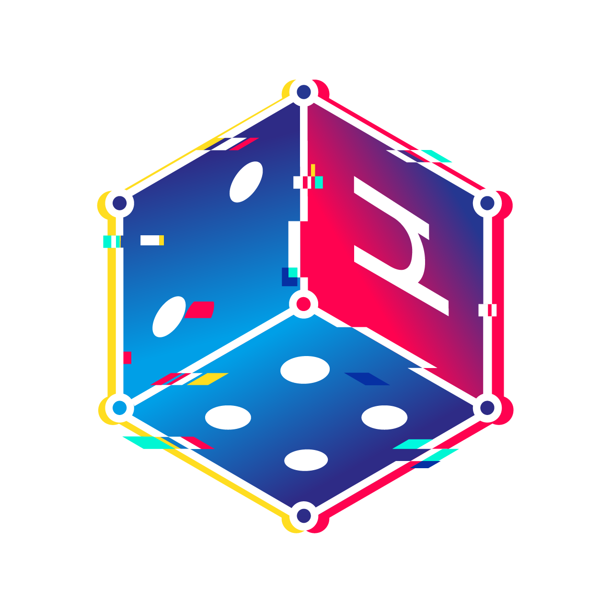
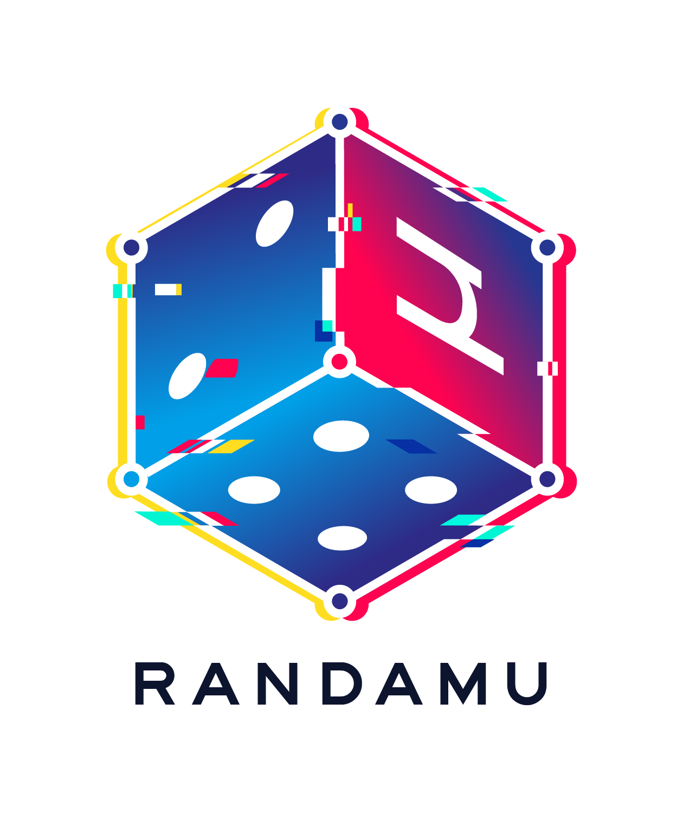
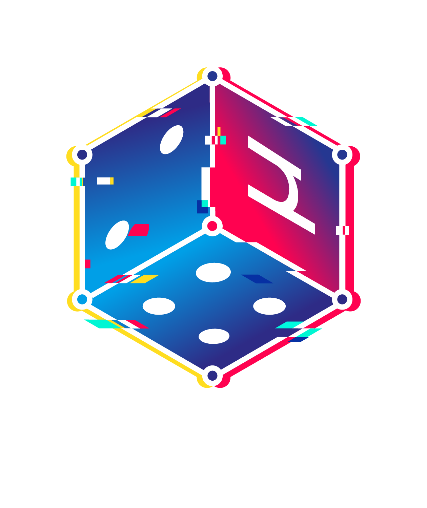
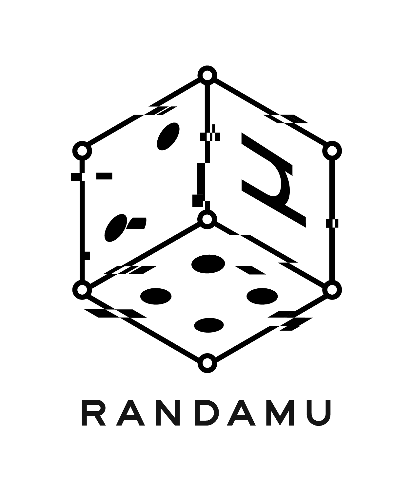
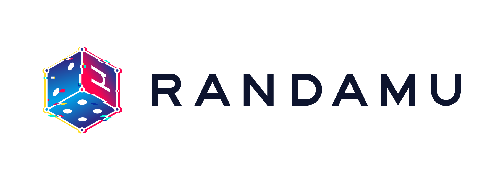

Key figures associated with randomness, cryptography, and technology — each treated with a signature colour from the brand palette.

Richard Feynman Tristan Perich
Tristan Perich

Rosario Gennaro
Julian Assange

Randamu needed a logo that felt energetic, digital, and a little unpredictable. The mark is built around a glitch-treated isometric die — nodding to chance and randomness while the chromatic aberration gives it a kinetic, tech-forward edge.
Alongside the logo system, I created a series of portrait photo treatments for key figures associated with the brand, each treated with a distinct colour from the palette.




Key figures associated with randomness, cryptography, and technology — each treated with a signature colour from the brand palette.

Richard Feynman
Tristan Perich

Rosario Gennaro